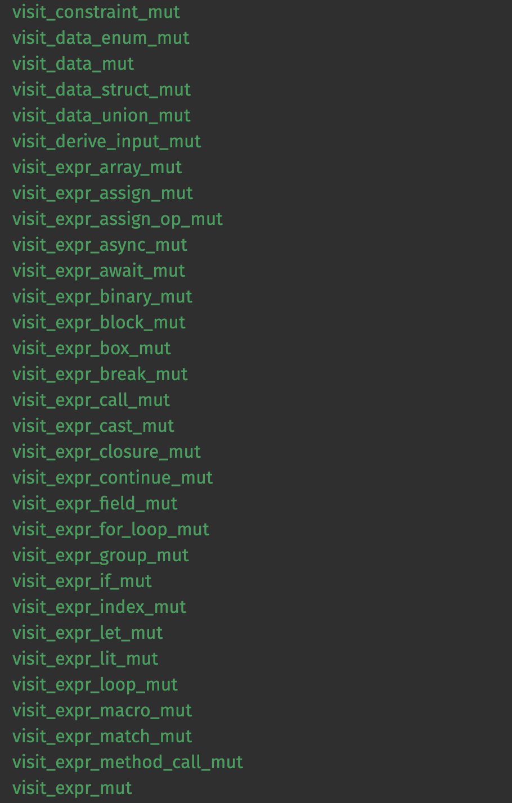

I’ve been helping out and contributing to exercism.io for the past few months. As an open source platform for learning programming languages that supports Rust, Exercism aligns very well with all the things I’m currently passionate about: open source, teaching, and Rust.
One of the most challenging hurdles the Exercism platform faces is the fact that students who opt in to receive mentor feedback on their work have to wait for a live person to get around to reviewing their submission. Decreasing wait times for students is thus an important metric to optimize for in order to improve the overall student experience on the platform.
In this post I’ll be talking about a project I’ve been working on that aims to address this problem. I’ll also be discussing the learnings I’ve been taking away from working on this project, as it’s my first non-toy Rust project that I’ve undertaken.
How Do We Decrease Wait Times for Students?
There are a couple of factors that contribute to longer waiting times for students on the Exercism platform: the availability of mentors, the number of pending submissions in the queue, and how much time it takes for a mentor to compose their feedback response to any one exercise.
Perhaps in the future, there will be a purely-autonomous system that is able to provide high quality tailored feedback in response to a student’s code submission. However, at this point in time, when it comes to giving human-centric feedback, I don’t believe computers are up to snuff yet.
So the question becomes: how do we streamline the process through which Exercism mentors provide feedback to students?
One thing that would help would be to reduce the set of possible configurations of student submissions, at least from the perspective of mentors. Submissions can be normalized by stripping away trivial aspects, such as formatting, comments, and variable names, that don’t contribute to making a submission unique as far as its logical approach.
For example, given the following student implementation of an Exercism exercise called two-fer
fn twofer(name: &str) -> String {
match name {
"" => "One for you, one for me.".to_string(),
// use the `format!` macro to return a formatted String
_ => format!("One for {}, one for me.", name),
}
}
would be transformed into the following:
fn PLACEHOLDER_1(PLACEHOLDER_2: &str) -> String {
match PLACEHOLDER_2 {
"" => "One for you, one for me.".to_string(),
_ => format!("One for {}, one for me.", PLACEHOLDER_2),
}
}
This is the job of a program called a representer. In Exercism, each language track will have its own representer to handle submissions for that particular track. When I noticed that the Rust track didn’t yet have a representer that was being worked on, I jumped at the chance to work on it!
Implementing a Rust Representer
At a high level, the steps a normalizing representer needs to take are the following:
- Parse the source code into an abstract syntax tree.
- Apply transformations to the appropriate tree nodes.
- Turn the tree back into a string representing the transformed source code.
The syn crate is perhaps one of the most robust libraries available in the Rust ecosystem for parsing and transforming Rust code. It’s primary use-case is as a utility for implementing procedural macros in Rust, but judging from its thorough documentation, it seemed full-featured enough to handle the use-case I had in mind.
The first step I took was to use the functionality provided by syn to parse some source code into an AST, print the AST, and then turn that AST back into a string:
use std::env;
use std::fs::File;
use std::io::prelude::*;
use std::io::Read;
use std::process;
fn main() -> Result<(), Box<dyn std::error::Error>> {
let output_path = “./output.rs”;
let mut args = end::args();
let _ = args.next();
let filename = match (args.next(), args.next()) {
(Some(filename), None) => filename,
_ => {
eprintln!(“Usage: representer path/to/filename.rs”);
process::exit(1);
}
};
let mut input = File::open(&filename)?;
let mut src = String::new();
input.read_to_string(&mut src)?;
let syntax = syn::parse_file(&src)?;
println!(“{:?}”, syntax);
let mut output = File::create(output_path)?;
output.write(syntax.to_string().as_bytes())?;
Ok(())
}
Starting off with this sets up a nice boundary in which we can work within. Now we’ll need to work out how we’ll traverse the AST and transform the relevant tree nodes.
syn’s VisitMut Trait
The syn crate provides an extremely handy trait called VisitMut, which provides the user with a lot of flexibility when it comes to traversing and mutating AST nodes in-place. The VisitMut trait exposes a whole slew of methods for accessing every type of AST node that syn differentiates.

A logical first place to start would be replacing the identifier name of a let binding, taking something as simple as
let x = 5;
and transforming it into
let PLACEHOLDER = 5;
The visit_pat_ident_mut method is what we’re looking for. It gives us access to AST nodes that represent variable binding patterns, of which let bindings are one of.
Since visit_pat_ident_mut is a trait method, we need to implement the VisitMut trait on a type so that the method’s behavior can be overwritten. To start off with, I defined an empty struct for this purpose:
use proc_macro2::{Ident, Span};
use syn::visit_mut::VisitMut;
struct IdentVisitor;
impl VisitMut for IdentVisitor {
fn visit_pat_ident_mut(&mut self, node: &mut PatIdent) {
// replace the node’s ident field with “PLACEHOLDER”
self.ident = Ident::new(“PLACEHOLDER”, Span::call_site());
}
}
Lo and behold, this simple logic worked! Top-level let bindings were traversed, with their variable names replaced with "PLACEHOLDER".
Generating Placeholder IDs
Turning our attention to replacing multiple variable names, we’ll need to generate IDs for each placeholder, so that mentors are able to differentiate between bindings with different patterns in the original submission.
One way to accommodate this is to store a global HashMap of all the generated mappings. This way, we can tell if an identifier has been encountered before, in which we’ll re-use the same generated placeholder; otherwise a new placeholder will be generated.
This is where our thus-far empty IdentVisitor struct comes in handy: we’ll define the hash map as a field on it.
...
use std::collections::HashMap;
use std::collections::hash_map::Entry;
const PLACEHOLDER: &str = “PLACEHOLDER_”;
struct IdentVisitor {
mappings: HashMap<String, u32>,
// a monotonically-increasing counter for new placeholders
uid: u32,
}
impl IdentVisitor {
fn new() -> Self {
IdentVisitor {
mappings: HashMap::new(),
uid: 0,
}
}
We’ll then also add a method to either fetch a pre-existing placeholder, or generate a new one if the identifier doesn’t yet exist as a mapping:
impl IdentVisitor {
...
fn get_or_insert_mapping(&mut self, ident: String) -> String {
let uid = match self.mappings.entry(ident) {
Entry::Occupied(o) => o.into_mut(),
Entry::Vacant(v) => {
self.uid += 1;
v.insert(self.uid);
}
};
format!(“{}{}”, PLACEHOLDER, uid)
}
}
We can now refactor our visit_pat_ident_mut method to use get_or_insert_mapping:
impl VisitMut for IdentVisitor {
fn visit_pat_ident_mut(&mut self, node: &mut PatIdent) {
let placeholder = self.get_or_insert_mapping(node.ident.to_string());
self.ident = Ident::new(placeholder, Span::call_site());
}
}
Huzzah! Multiple let bindings are now replaced with placeholders that each have a different ID:
let PLACEHOLDER_1 = 5;
let mut PLACEHOLDER_2 = 15;
Eliminating Duplicated Code with Traits
With variable bindings out of the way, much of the way forward involves accessing every other type of AST node that contains identifiers that we’d like to replace: struct names, enum names, user-defined types, function definitions, etc.
Struct names can be accessed via the visit_item_struct_mut method. Recycling the same logic we used for transforming let binding identifiers, we can write:
impl VisitMut for IdentVisitor {
...
fn visit_item_struct_mut(&mut self, node: &mut ItemStruct) {
let placeholder = self.get_or_insert_mapping(node.ident.to_strong());
self.ident = Ident::new(placeholder, Span::call_site());
}
}
For certain types of AST nodes (such as the Expr type that encapsulates Rust expressions), the logic can certainly get more complicated, but this is the general gist of the overall pattern.
One piece of advice I was given by a much more experienced Rust developer was to implement a new trait to represent the ability of certain nodes to have their identifier replaced. While doing such a thing won’t actually allow us to significantly reduce the total SLOCs of the implementation as it stands now, it will improve future maintainability of the codebase. Plus, I’d never really been presented with a relevant opportunity to implement a Rust trait, so I jumped at the chance to do it in a “real” Rust project.
The trait I ended up implementing exposes two methods: ident_string, which ensures that the AST node has an identifier that can be replaced, and set_ident, which replaces the node’s identifier with a specified string:
trait ReplaceIdentifier {
fn ident_string(&self) -> String;
fn set_ident(&mut self, ident: String);
}
Now, we’ll implement this trait on nodes that have an identifier, which include the aforementioned PatIdent and ItemStruct, as well as many others:
impl ReplaceIdentifier for PatIdent {
fn ident_string(&self) -> String {
self.ident.to_string()
}
fn set_ident(&mut self, ident: String) {
self.ident = Ident::new(ident, Span::call_site());
}
}
impl ReplaceIdentifier for ItemStruct {
fn ident_string(&self) -> String {
self.ident.to_string()
}
fn set_ident(&mut self, ident: String) {
self.ident = Ident::new(ident, Span::call_site());
}
}
I then opted to implement a replace_identifier method for any type that implements the ReplaceIdentifier trait:
impl IdentVisitor {
...
fn replace_identifier<Node: ReplaceIdentifier>(&mut self, node: Node) {
let ident_string = node.ident_string();
let identifier = self.get_or_insert_mapping(ident_string);
node.set_ident(identifier);
}
}
Following this, we’ll change our various visit_mut methods to utilize replace_identifier:
impl IdentVisitor {
...
fn visit_pat_ident_mut(&mut self, node: &mut PatIdent) {
self.replace_identifier(node);
}
fn visit_item_struct_mut(&mut self, node: &mut ItemStruct) {
self.replace_identifier(node);
}
}
Refactoring the code in this way clearly separates concerns: the visit_mut methods access the AST nodes we care about, the ReplaceIdentifier trait lays out the contract that nodes need to adhere to, which the replace_identifier method can then act upon.
It was so cool to me to have gotten an opportunity to utilize traits in such a way when implementing this project. Before this, I’d only ever had a vague understanding of traits. Using them in this way in this project really served to hammer home the point of why traits are useful and when are appropriate times to use them.
In Closing
While the portrait of the representer that I’ve painted in this post is quite simplified (some types of Rust syntax, such as expressions, are a bit more complex to handle), it preserves the kernel of how the representer functions. If you’re interested, you can keep track of my progress here.
If you’re interested in contributing to this sort of project, or helping out as a mentor for those looking to sharpen their programming skills, Exercism is always looking for more open source contributors, maintainers, and mentors, especially with our in-progress V3 push!